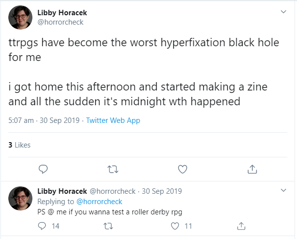
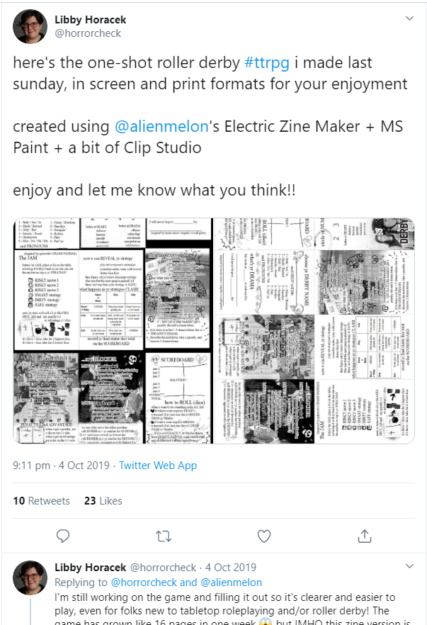

Derby Drama: Role Playing Roller Derby
This document is licenced CC:BY-SA 4.0, the authors are Libby Horacek and Sam Skipsey
Whilst they might seem superficially different, Roller Derby and Role Playing Games have a surprising amount in common, including having experienced more than one resurgence of popular interest driven by pop cultural reference.
If Roller Derby has Whip It, and now Birds of Prey; RPGs (and especially their most famous example, Dungeons & Dragons), have appearances in E.T. (and their own cartoon) in the 80s and Stranger Things in the present day, as well as increasing popularity through “actual play”, role playing game campaigns streamed live, or recorded, on Twitch, YouTube or as podcasts.
Now, Libby Horacek has made the, perhaps obvious in retrospect, step of connecting the two, via an RPG set in the context of Roller Derby itself… a game of tactics on track and management and feelings off track, which can only have one name:
Derby Drama

Here at SRD we like both Roller Derby and RPGs, and we know that there’s a huge crossover between D&D players and skaters, so we thought it was worth catching up with Libby to talk about all things Derby, RPGs and anything else, starting with how this all started for her.
.
Like a lot of folks, I got interested in RPGs in just the past few years, and I got involved through Actual Play media - in my case, podcasts! I started with The Adventure Zone and eventually found my favorite, Friends at the Table . Friends at the Table was the podcast that made me realize that role-playing was something I would enjoy doing and not just listening to. My sister Sam invited me to join an online D&D campaign, said yes, and from there I was just in it 100%.
Friends at the Table is perhaps a little unusual in being an actual play series which has never used Dungeons & Dragons rules or settings; their main campaigns use the Dungeon World ruleset (which also inspired Derby Drama, as we will discuss later), but special episodes use still other RPGs - from collaborative worldbuilding game Microscope to SciFi mecha games like Beam Saber. It’s a good example of the best, and most experimental, side of modern RPG culture: both in terms of showcasing the sheer variety of different things that RPGs can do and be; and in terms of their commitment to the same kind of positive cultural values as Roller Derby’s community hold dear.
Libby used to skate for Ohio Valley Roller Girls , who’re currently rated 60.5 (and ranked 346) by WFTDA. However, as we all know, Roller Derby is a sport which demands a lot of resources, in terms of time, money, and risk, so she no longer competes. She also moved State in the interim, which made it hard to stay involved in a non-skating role… so the obvious way to keep the same experience was to simulate it instead...
Derby Drama came about because I missed playing roller derby, but just pretending to play seemed so much easier than actually attending a training camp. My laziness backfired though because this game has eaten up my nights and weekends just as well, and I don't even have any cool bruises to show for it!
I came up with the idea one night and I happened to have a board game day with my friends the next day. So I asked them, hey, can we try this out? It was shockingly fun considering I was the only one with any derby experience and everyone else was just making it up as they went along.
I spent the rest of the weekend making the first zine and just asked kinda jokingly on Twitter if any one wanted to give it a try.
.
The Apex retweeted it and I got so much support from the derby community! I was just blown away! Special shout out to Ace, Nyoom, and Hazenburg for early playtesting on Discord.
.
The goal the whole time has been to capture the feeling of roller derby - the chaos but also the strategy. I also wanted the game to be accessible to both role-players who know nothing about roller derby and roller derby players who are new to role-playing games. Basically I wanted it to be a game that I could play both with my old teammates and with my new RPG friends. It took a lot of work to make something that felt like derby but wasn't confusing to non-fans!
That meant zooming out a bit from a stride-by-stride, hit-by-hit simulation of a roller derby jam. Instead we focus on your overall strategy for the jam and plays that you put together with your teammates before the game. That abstraction also allows the game to work for different types of roller derby, or maybe even other sports.
Libby on track when she played with Ohio Valley Roller Girls [Photo copyright: Intuitive Capturing Studios ]
On the Derby Drama website, Libby lists a selection of Role Playing Games, some more obscure than others, as influences. (None of these are Dungeons & Dragons!) For those who’ve only seen, or played, D&D 5e, it might be surprising just how much effect a choice of mechanics can have on the tone of a RPG, so we thought it was worth digging deeper into these influences.
In the modern era of RPGs (perhaps since 2010), it’s been increasingly popular to take explicit influence from other games. Some games and designers even directly encourage this - with Apocalypse World starting the trend by suggesting that games strongly influenced by their rule system advertise themselves as “Powered by the Apocalypse”; producing such games as Dungeon World (in a D&D style setting) and Monsterhearts (LGBTQIA teens discovering themselves via the metaphor of being supernatural monsters), in contrast to Apocalypse World’s “after the end of the world” setting.
Derby Drama isn’t so strongly influenced by any of the below to justify an explicit “branding” like that, but the final result would not have been the same without exposure to all of these previous ideas and approaches.
Crash Pandas is a big influence, especially considering it’s only a one-page page! It’s a game where you and your friends play multiple racoons driving a single car in a street race. It’s total chaos because each raccoon is trying to drive the car at the same time - so like, one racoon is jumping on the accelerator, another is trying to turn right, another is leaping out the window to dive in some garbage. The game captures this chaos by having everyone choose actions independently, then reveal their decisions all at once. And I just thought that was a great way to simulate the chaos of the pack in roller derby!
[ Crash Pandas is an excellent example of a minimalist, free to play RPG. As Libby notes, it fits on a single page, and contains everything you need to play there except some 6-sided dice.]
The Burning Wheel also has this element of committing to and then revealing strategies, in the Duel of Wits and Fight! Minigames, but it’s really more of an indirect influence, since I haven’t actually had a chance to play those minigames! (Someday I will find my dream Burning Wheel group…) When I was trying out dice mechanics, Burning Wheel inspired the stats being the number of dice you roll (as opposed to a number you add to the result) and a die of 4+ being a success. I guess lots of games do this but Burning Wheel was the one I took the most inspiration from.
[ The Burning Wheel is a game by Luke Crane, and others, set in something like a “more realistic” version of the classic Fantasy setting. Famously “crunchy” (having detailed rules for everything), it’s something of a “cult classic”, with those who’ve heard of it usually having strong opinions on its approaches. BW cares a lot about character motivation - the reasons you do things, especially the things that you maybe shouldn’t. Most relevantly here, it also includes rules for resolving conflicts of various kinds - physical or philosophical - by a sort of iterated rock-paper-scissors style conflict of strategies. It’s also connected to Roller Derby itself directly - one of the original writers is also a coach for Gotham!]
The Quiet Year is an influence for a couple reasons - first, I originally envisioned Derby Drama as a league management game. It was more going to be a hack of The Quiet Year where you would get cards representing different obstacles your league might run into and you’d work with the other players to recruit and train your skaters and book bouts and manage money and so on. “Stress tokens” originally were more like The Quiet Year’s “contempt tokens” - not really having any mechanical effect, but representing the tensions in your derby community.
[ The Quiet Year is part of an unusual subgenre of collaborative RPGs which aren’t really “role-playing” games, but more “collaborative storytelling” games. There’s no central authority, or GM, but each player is given control of aspects of an ongoing history of a world - including the right to add things to a map, and decide how to interpret the meaning of randomly drawn cards in terms of the history.]
Then I decided there should be bouts so you could test how well your team was doing, and I loved working on that part so much it became the whole game! The stress tokens stayed, but they took on a mechanical purpose of expressing how tired and stressed out individual skaters are. That was stolen straight from John Harper’s Blades in the Dark! But I kept from the Quiet Year beginnings that stress has this community aspect - all the skaters are drawing from this collective pool of energy, so there’s a collective need to manage that resource.
[ Blades in the Dark is probably the “biggest” recent RPG hit in indie circles; players are part of a team of scoundrels and ne'er do wells engaging in dangerous heists in a steampunk city. It’s such a good ruleset for representing rag-tag bands engaged in dangerous missions that since it launched in 2016, it already has at least three “spinoff” games using it’s core ruleset (“Forged in the Dark” games), including one where players are tragic magical girls (“Girl by Moonlight”).]
Dungeon World is mostly an influence in that I love it so much that it can’t help but influence my work. The actual influence is mostly about the collaborative world-building and character creation aspects.
[ Dungeon World is, as we mentioned above, a Powered by the Apocalypse game by Sage LaTorra and Adam Koebel. Like all PbtA games, it’s especially interested in encouraging players to link their characters together with shared pasts, and its rules essentially negotiate narrative control between the GM and the players. Adam is a declared huge fan of The Burning Wheel as well, and this is clearly visible in DW’s interest in driving beliefs and how they can undermine you. Derby Drama’s “graduated success” model is very in keeping with DW - and PbtA in general - in that you rarely get exactly what you want, and have to decide which parts of it are most important.]
Finally, Lucian Kahn’s Visigoths vs Mallgoths game was the first “team” tabletop game that I ever played and it convinced me that a team-based game could work! And World-Wide Wrestling by Nathan D. Paoletta has taught me a lot about how to describe roller derby and role-playing to people new to either side of this game.
[ Visigoths vs Mallgoths is either exactly what you expect from that title, or nothing like it. It’s a lightweight, zine-style RPG heavy on the whimsy, flirting, and emotional damage, and of course, shopping! ]
As with many of the above RPGs, Derby Drama is primarily funded by a Kickstarter campaign, https://www.kickstarter.com/projects/horrorcheck/derby-drama , which closes in less than 3 days! If you have time, you absolutely should donate to it - some of the options including providing “free” community copies to support marginalised members of the community, and other great initiatives. However, the end of the Kickstarter will certainly not be the end of Derby Drama, as Libby can explain and lead us out.
I'm so grateful for the support this game has gotten, both from the roller derby community and from tabletop players. I really didn't anticipate this level of success! Most of all I'm excited to be able to hire talented artists to draw roller derby illustrations.
The Kickstarter is drawing to a close pretty soon, but I should have the budget to print a few extra copies to sell in an online store so people can get the game even if they miss the Kickstarter. I'll also have some digital community copies for folks who can't afford the game - you can sign up on the mailing list on the website to hear when those are available.
I have so many ideas for future settings and alternate rulesets, including:
- Rollerball-esque cyberpunk
- Dungeon Derby (high fantasy roller derby!)
- A Roller Game-inspired Japanese league
- Derby Drama Advanced (additional strategic rules for "expert" players)
I hope I get to make all these zines happen in the future!